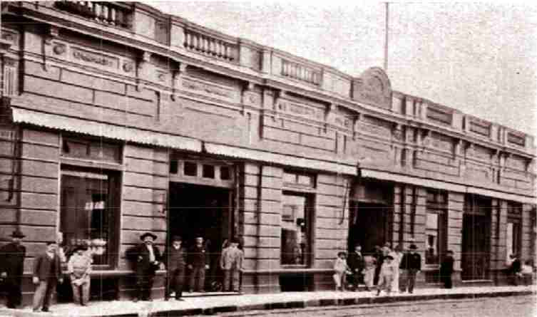

Entre las casas comerciales, la Sociedad Anónima Rius y Jorba de Don Juan Rius y de Don Marcelino Jorba, era la más importante. Fue fundada en 1872 y operaba en casi todos los rubros de importación, desde los vestidos hasta los ramos de ferretería, bazar y almacenes generales. La sociedad, refundada en 1909, con la incorporación de otros socios, también fue dueña del Teatro Granados.
El frente de la propiedad, sobre la calle Palma, corresponde al sitio ocupado actualmente por la Secretaría Nacional de Turismo, mientras que sobre la calle presidente Franco, el edificio todavía muestra una de las más bellas creaciones del art-decó local.
La Secretaría Nacional de Turismo SENATUR se crea el día 30 de diciembre de 1998, institución que tiene como labor principal ejecutar la política nacional de turismo, orientando, promoviendo, facilitando y regulando el desarrollo del turismo en el Paraguay, en beneficio de visitantes y de la ciudadanía en general.
Su recinto principal está ubicado sobre una de las calles más importantes del Centro Histórico de Asunción, la calle Palma y además acoge en su interior a “El Turista Roga”, punto estratégico para los turistas, ya que en este sitio se encuentra una exposición permanente de productos artesanales de todo el país, y también ofrece información turística al visitante todos los días de la semana.